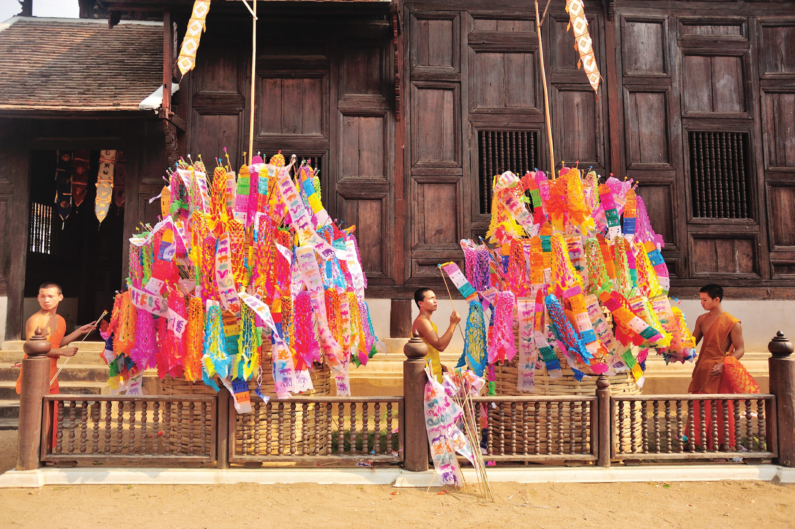
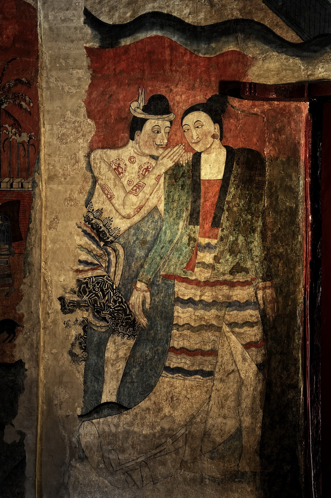

วัฒนธรรมอาณาจักรล้านนา
วัฒนธรรมล้านนามีเอกลักษณ์โดดเด่น ทั้งด้านภาษา การแต่งกาย อาหาร และประเพณี เช่น ประเพณียี่เป็ง และประเพณีสงกรานต์แบบล้านนา
ศิลปกรรมล้านนามีชื่อเสียงด้านงานแกะสลักไม้ สถาปัตยกรรมวัด และจิตรกรรมฝาผนัง ซึ่งสะท้อนความเชื่อทางศาสนา
จิตรกรรมและภาพลายเส้นของล้านนานั้น อาจกล่าวได้ว่าเป็นศิลปะการช่างที่มีความสำคัญ และน่าสนใจมากที่สุดแขนงหนึ่ง เพราะนอกจากจะเป็นสิ่งที่สร้างขึ้น เพื่อตอบสนองต่อเงื่อนไขการดำรงอยู่ของสังคมล้านนาในอดีตแล้ว ยังสามารถบ่งบอกถึงคติความเชื่อ ประเพณีและวัฒนธรรมของชุมชนนั้นๆ
อีกด้วย เทคนิคและวิธีการตลอดจนการแสดงออกของศิลปะ บ่งบอกถึงงานช่าง ความรู้สึกนึกคิด และการติดต่อ สัมพันธ์กับสังคม วัฒนธรรมอื่น อีกทั้งยังมีความสำคัญทางประวัติศาสตร์ และโบราณคดีอีกด้วย

ชาวล้านนานับถือพระพุทธศาสนามาตั้งแต่ครั้งโบราณกาล ทำให้วิถีชีวิตของชาวล้านนาผูกพันกับพระพุทธศาสนาอย่างแนบแน่น หลักคำสอนของพระพุทธศาสนาจึงมีอิทธิพลต่อชาวล้านนาในด้านวิทยาการความรู้ต่างๆ รวมทั้งได้มีส่วนสำคัญที่ก่อให้เกิดแบบแผนทางวัฒนธรรมหลายๆ
ตลอดจนคติความเชื่อประเพณีและพิธีกรรมต่างๆ โดยเฉพาะอย่างยิ่งประเพณีพิธีกรรมเกี่ยวกับความตาย ซึ่งหลักคำสอนของพระพุทธศาสนา เน้นเรื่องผลของบาปกรรม ชาติภพ ดังนั้นความเชื่อหลังความตายจึงก่อให้เกิดประเพณีเพื่อการเฉลิมฉลองให้กับคนตายที่ได้สร้างคุณงามความดีมาตลอดทั้งชีวิตขึ้น ประเพณีดังกล่าวนี้เรียกว่า ประเพณีปอยล้อหรือปอยลากปราสาท